Columns show normalized τ = 0, 0.5, 1; actual time is scaled by T_end. Rows include every algorithm scheduled by the immutable run plan.
| Algorithm / run status | Start (τ=0) | Midpoint (τ=0.5) | End (τ=1) |
|---|---|---|---|
| branch-and-bound run: run_20261012T042143Z__branch-and-bound__minmax__stars-0000030.instance-1955c914c741-2f__r00__c3eb2bdc272e COMPLETED; feasible=True; verified=True (CERTIFIED_CONTINUOUS); optimality=OPTIMAL | 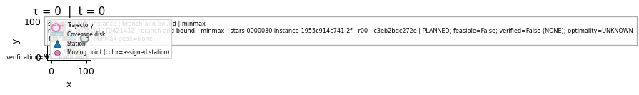 | 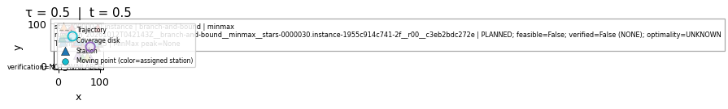 | 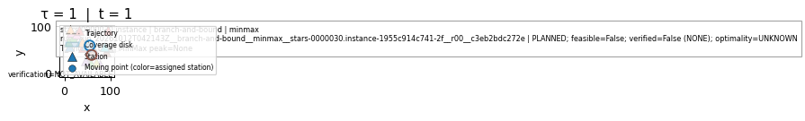 |
| brute-force run: run_20261012T042143Z__brute-force__minmax__stars-0000030.instance-1955c914c741-2f__r00__7d2d390164e5 COMPLETED; feasible=True; verified=True (CERTIFIED_CONTINUOUS); optimality=OPTIMAL | 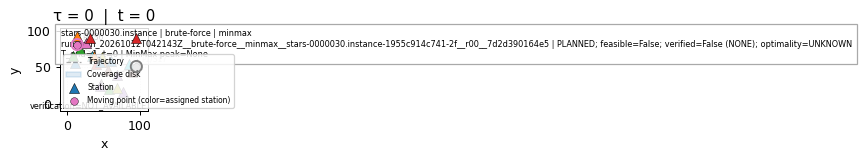 | ||
| genetic run: run_20261012T042143Z__genetic__minmax__stars-0000030.instance-1955c914c741-2f__r00__bdb63d5a9323 COMPLETED; feasible=True; verified=True (CERTIFIED_CONTINUOUS); optimality=FEASIBLE | 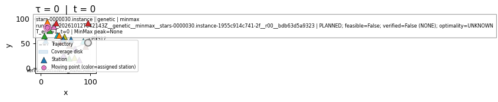 | 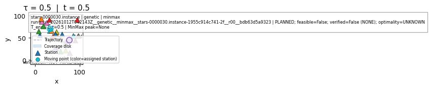 | |
| greedy run: run_20261012T042143Z__greedy__minmax__stars-0000030.instance-1955c914c741-2f__r00__de55664536a0 COMPLETED; feasible=True; verified=True (CERTIFIED_CONTINUOUS); optimality=FEASIBLE | 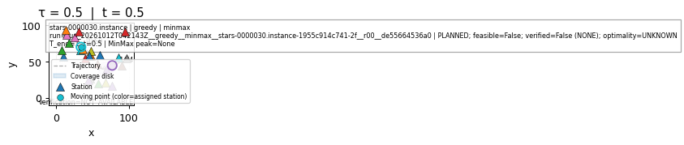 | ||
| ip-kont run: run_20261012T042937Z__ip-kont__minmax__stars-0000030.instance-1955c914c741-2f__r00__fa5b3c07ebff SKIPPED; feasible=False; verified=False (NONE); optimality=UNKNOWN | SKIPPED; feasible=False; verified=False (NONE); optimality=UNKNOWN NO_SOLUTION_ARTIFACT | SKIPPED; feasible=False; verified=False (NONE); optimality=UNKNOWN NO_SOLUTION_ARTIFACT | SKIPPED; feasible=False; verified=False (NONE); optimality=UNKNOWN NO_SOLUTION_ARTIFACT |
| local-search run: run_20261012T042143Z__local-search__minmax__stars-0000030.instance-1955c914c741-2f__r00__50a3052ef325 COMPLETED; feasible=True; verified=True (CERTIFIED_CONTINUOUS); optimality=FEASIBLE | 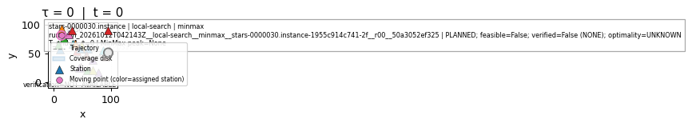 | 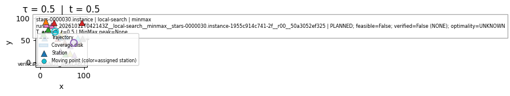 | 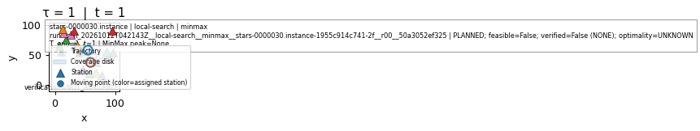 |
| lp-rounding run: run_20261012T042143Z__lp-rounding__minmax__stars-0000030.instance-1955c914c741-2f__r00__22c9b25a163b COMPLETED; feasible=True; verified=True (CERTIFIED_CONTINUOUS); optimality=FEASIBLE | 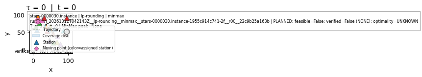 | 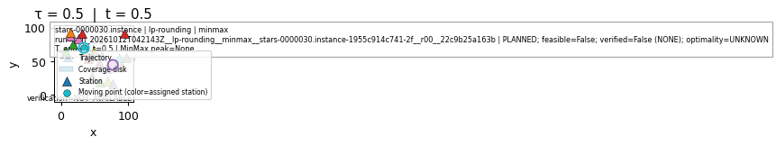 | 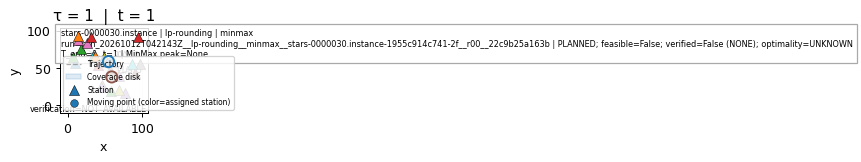 |
| nn run: run_20261012T042143Z__nn__minmax__stars-0000030.instance-1955c914c741-2f__r00__4e492fab67c2 COMPLETED; feasible=True; verified=True (CERTIFIED_CONTINUOUS); optimality=FEASIBLE | 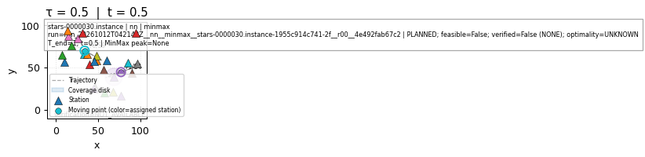 | 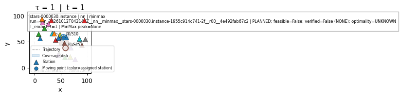 | |
| primal-dual run: run_20261012T042143Z__primal-dual__minmax__stars-0000030.instance-1955c914c741-2f__r00__f1532fa8f49e COMPLETED; feasible=True; verified=True (CERTIFIED_CONTINUOUS); optimality=FEASIBLE | 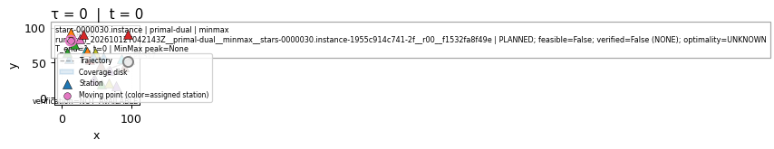 | 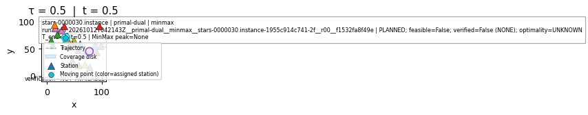 | |
| sa run: run_20261012T042143Z__sa__minmax__stars-0000030.instance-1955c914c741-2f__r00__0f7d8540edc6 COMPLETED; feasible=True; verified=True (CERTIFIED_CONTINUOUS); optimality=FEASIBLE | 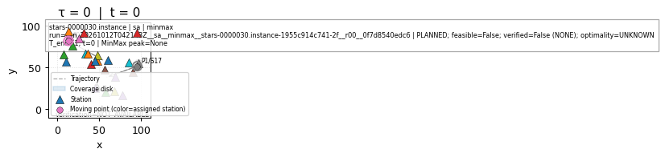 | 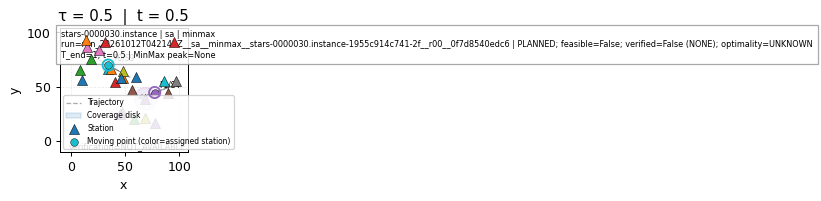 | 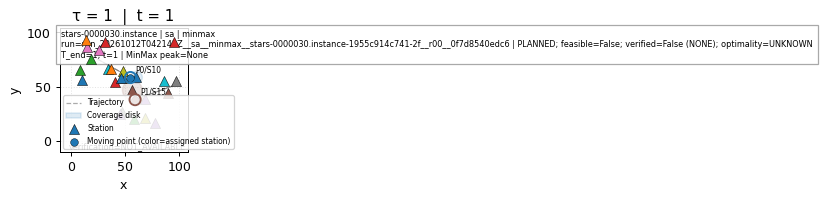 |
| shifting run: run_20261012T042143Z__shifting__minmax__stars-0000030.instance-1955c914c741-2f__r00__70f09504ef1b COMPLETED; feasible=True; verified=True (CERTIFIED_CONTINUOUS); optimality=FEASIBLE | 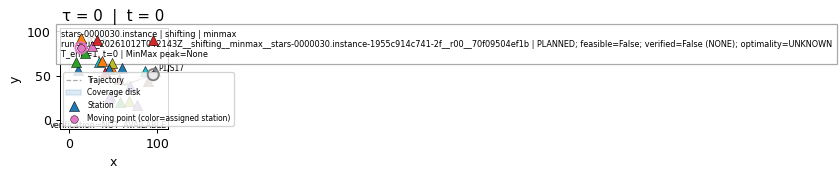 |